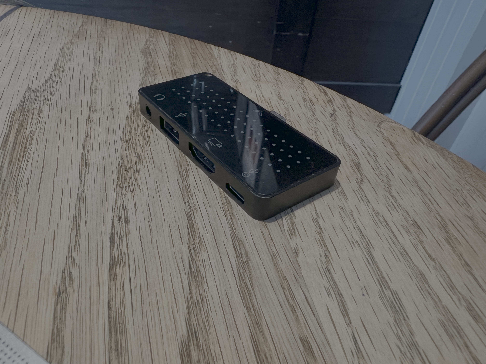
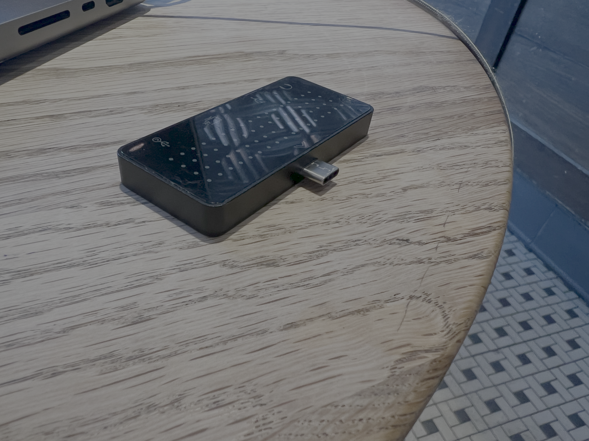
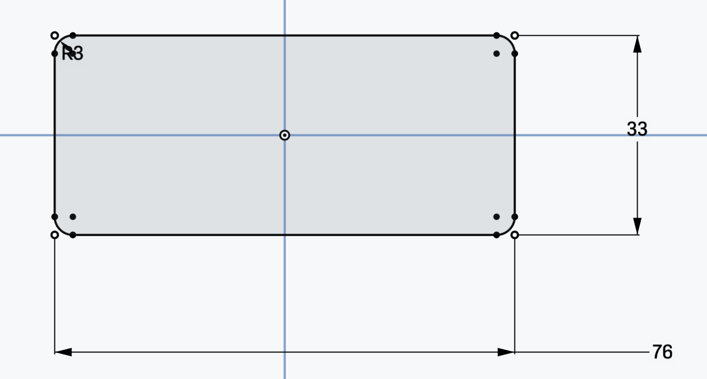
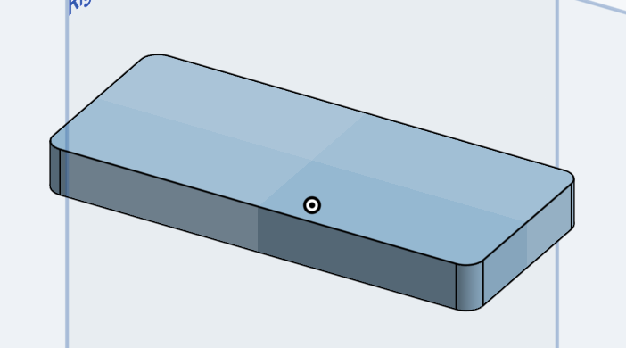
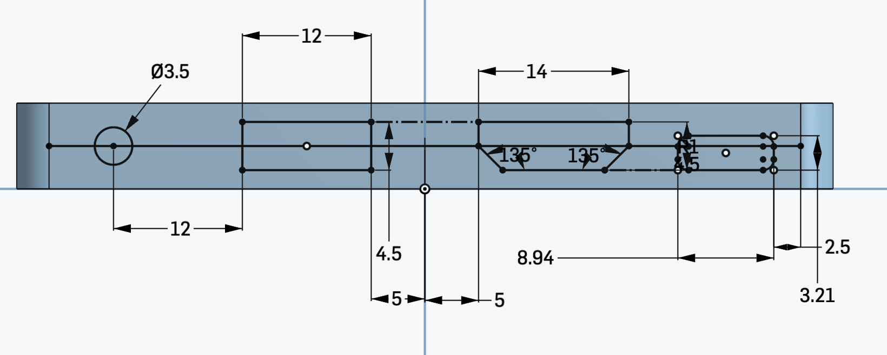
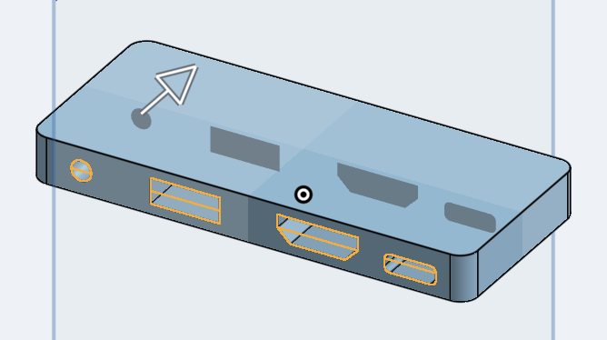

See Week 3 - Electronics to see a combination of this assignment with the kinetic sculpture.
I struggled to install Fusion on my laptop given I no longer have a student email address, so I decided to use Onshape, which I had used years ago during an internship. I spent some time re-familiarising myself with the software and good design principles.


USB-Hub
I decided to model the USB-Hub I use with my laptop, as it uses simple shapes and clear dimensions.


Body of the USB hub.
I started with a sketch of the footprint of the USB hub by creating a rectangle with fillets. Given I want to draw the next parts onto the body, I extruded the sketch to form the body.


Input-side sketch and remove extrusion.
I then moved onto the input side of the hub. I looked up the dimensions for USB-A, C, HDMI, and headphone jacks, and measured the distances between key points on the hub using calipers. Given these are cut into the hub, I did a blind remove extrude of 18mm through the main body.